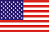
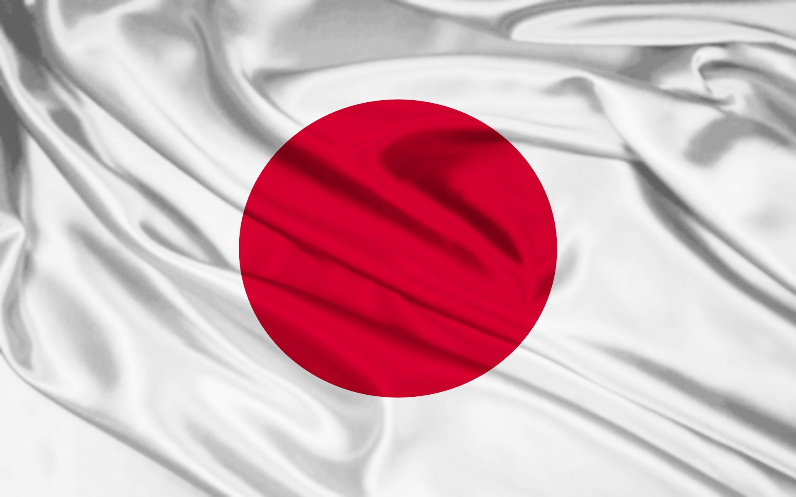
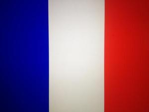

Научная премия Кавли , которая вручается за выдающиеся достижения в трех областях – астрофизике, нанотехнологиях и неврологии, была учреждена в 2007 г. Премия носит имя норвежского мультимиллионера и филантропа Фреда Кавли , придумавшего и спонсирующего ее. Соучредителями премии стали Норвежская академия наук и Министерство образования и науки Норвегии.
Отбор победителей по каждой номинации возложен на специально созданные комитеты из ведущих специалистов в данной области, рекомендованные научными академиями, в том числе Королевским обществом Великобритании . В состав комитетов входят ведущие ученые из Азии, Европы и Северной Америки, которых рекомендовали Китайская академия наук, Французская академия наук, Общество Макса Планка, Национальная академия наук .
С 2008 г. премии Фонда Фреда Кавли вручаются раз в два года. Размер премии в каждой из областей составляет 1 млн долларов. Общий призовой фонд, таким образом, составляет 3 млн долларов.| Год | Организация/Страна | Лауреат | Обоснование |
|---|---|---|---|
| 2014 | Институт теоретической физики имени Л. Д. Ландау РАН, Россия |  Алексей Старобинский Алексей Старобинский |
«за пионерские работы в теории космической инфляции» | 2012 | Калифорнийский университет, США |  Дэвид Джуитт | «за открытие и описание пояса Койпера и его крупнейших объектов» | 2008 | Университет Мэидзё, Япония | Сумио Иидзима | «за их большое влияние в развитии нанонауки области нулевых и одномерных наноструктур в физике, химии и биологии» | 2014 | Страсбургский университет, Франция | Томас Эббесен | «за вклад в оптическую микроскопию и имиджинг» |